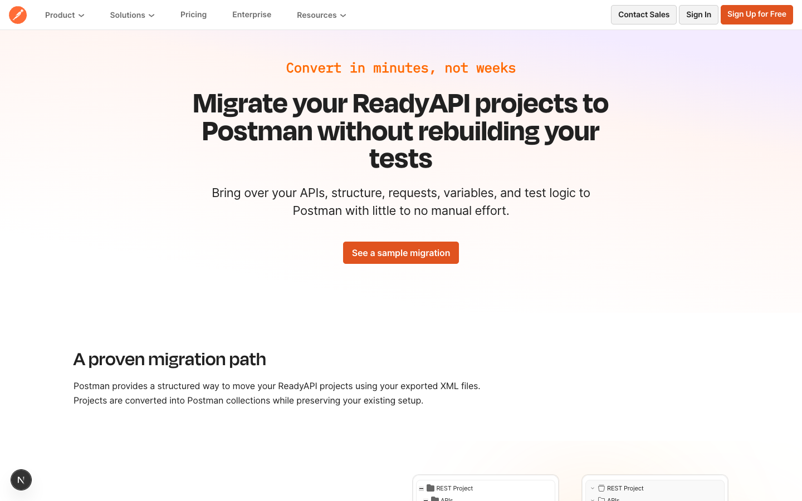

MKTG-10258 · ReadyAPI migration landing
Design preview for stakeholder review
Static snapshots captured from local marketing-site dev on May 28, 2026. Open either layout to review copy, section order, and product demos (self-contained HTML — no localhost required).

Live page (stakeholder layout)
Matches /alternatives/readyapi-migration/ — centered hero, tree + code
compare demos, three outcome cards, secure section illustration.

Updated design (?layoutPreview=1)
Captured from ?layoutPreview=1 on the same route — use this to compare the
proposed layout variant side-by-side with the live stakeholder page.